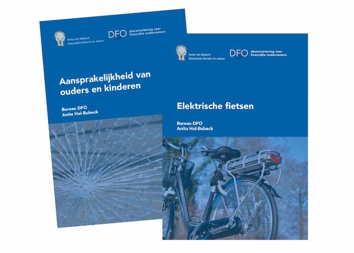
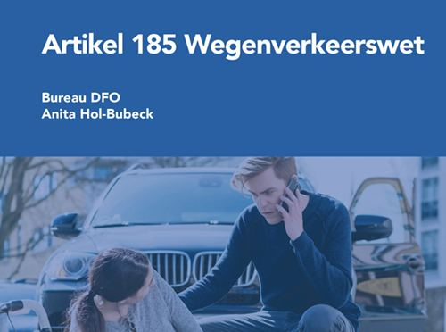
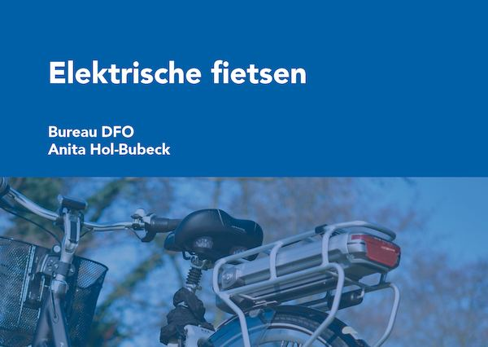
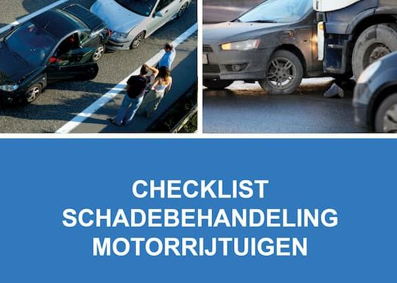
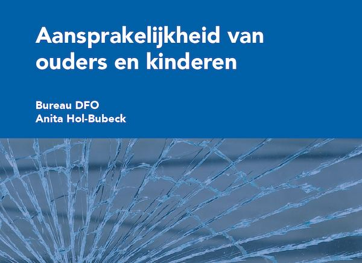
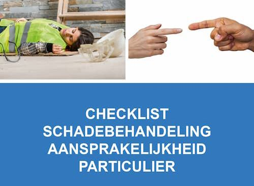

Overzicht checklists en documenten rondom Schade (particulier en zakelijk)
Bureau DFO biedt een reeks AI-trainingen aan die professionals in de financiële dienstverlening helpen om efficiënter en effectiever te werken. Hieronder vindt u een overzicht van vijf trainingen die aansluiten bij verschillende behoeften en expertiseniveaus
Artikelnummer . Bestellen en betalen gaat via de webshop op dfobv.nl.
Omschrijving
In de praktijk van schadebehandelaars, adviseurs en juristen duiken dagelijks complexe dossiers op: van aansprakelijkheid bij ongevallen tot schade door kinderen of e-bikes. Deze vaknotities, checklists en readers bieden verdieping op precies die thema’s waar theorie en praktijk samenkomen. Met heldere uitleg, praktijkvoorbeelden en bruikbare tools sta je sterker en handel je sneller.
Met bijdragen van experts als Anita Hol-Bubeck die kennis moeiteloos vertaalt naar praktische adviezen – is deze collectie een onmisbare bron. Van juridische duiding tot risicoanalyse: actueel, toepasbaar en ontwikkeld voor de praktijk.
Anita verzorgt ook trainingen en webinars. Benieuwd naar het aanbod? Klik hier

Vaknotitie: Art. 185 WVW – De nachtmerrie van de automobilist

Dagelijks vinden er verkeersongevallen plaats waarbij motorrijtuigen en zwakkere verkeersdeelnemers betrokken zijn. Deze vaknotitie leert je 185 WVW en de daarbij horende jurisprudentie ( de reflexwerking, de 100% regel, de 50% regel) toe te passen in de schaderegelingspraktijk bij advieskantoren en verzekeraars. Klik hier voor meer informatie

Vaknotitie: Elektrische fietsen

Wat weet jouw team echt over e-bikes? In deze vaknotitie staat wanneer een e-bike een motorrijtuig is op grond van de wet en wat dat betekent voor aansprakelijkheid en verzekeringsadvies. Onmisbare kennis in een tijd waarin e-bikes steeds vaker voorkomen. Klik hier voor meer informatie
 Reader Verkeersrecht – voor de Schadebehandelaar
Reader Verkeersrecht – voor de Schadebehandelaar
Een compleet naslagwerk van 70+ pagina’s voor schadebehandelaars, met heldere uitleg van verkeerssituaties en relevante regelgeving. Inclusief bedrijfsregelingen zoals Schuldloze Derde, OVS en DSA – alles ondersteund door visuele situatieschetsen. Klik hier voor meer informatie

Checklist schadebehandeling motorrijtuigen

Deze uitgebreide checklist helpt schadebehandelaars niets te vergeten bij autoschades. Met verzekeringstechnische toelichting, klantgerichte modelbrieven en uitleg over schadesturing, aansprakelijkheid en communicatie. Praktisch, compleet en klantvriendelijk. Klik hier voor meer informatie
 Vaknotitie Cyberrisico
Vaknotitie Cyberrisico
In de vaknotitie Cyberrisico is op overzichtelijke wijze informatie over cyberrisico’s, de wet- en regelgeving rondom cyberrisico, de te treffen preventiemogelijkheden en de verzekeringsmogelijkheden van cyberrisico beschreven. Klik hier voor meer informatie

Vaknotitie: Aansprakelijkheid ouders en kinderen

Schade door kinderen roept vaak vragen op. Deze vaknotitie maakt duidelijk wat juridisch en verzekeringstechnisch telt, ook bij samengestelde gezinnen. Een must-read voor elk kantoor dat snel en adequaat wil reageren. Klik hier voor meer informatie
Verzekeringstechnische risicoanalyse particuliere relatie

In het civiel recht en bij het KiFiD neemt het aantal claims toe tegen verzekeringsadviseurs wegens fouten of tekortkomingen. Regelmatig worden claims toegewezen omdat de adviseur niet kan aantonen welke handelingen zijn verricht of wat er met de klant is besproken. Bureau DFO helpt je met dit volledige adviesdocument waarin je álle particuliere schadeverzekeringen structureel vastlegt. Regelmatig geüpdatet door Anita Hol-Bubeck. Klik hier voor meer informatie

Checklist schadebehandeling aansprakelijkheid particulier

Speciaal voor particuliere aansprakelijkheidsschades: een checklist met uitleg over de belangrijkste juridische en verzekeringstechnische valkuilen. Duidelijk, educatief en gericht op optimale klantbegeleiding. Klik hier voor meer informatie
Checklist Schade (Particulier)

Een praktisch hulpmiddel om schadebehandeling bij particulieren te structureren. Houd grip op emoties, juridische risico’s en verwachtingen. Dankzij deze checklist blijft je dienstverlening professioneel – ook als het onverwacht hectisch wordt. Klik hier voor meer informatie
Checklist Schade (Zakelijk)

Een praktisch hulpmiddel om schadebehandeling bij zakelijke klanten te structureren. Houd grip op emoties, juridische risico’s en verwachtingen. Dankzij deze checklist blijft je dienstverlening professioneel – ook als het onverwacht hectisch wordt. Klik hier voor meer informatie
Passende opleidingen en masterclasses
Opleidingen van Bureau DFO
Praktijkgerichte trainingen, webinars en leergangen.
Schade Boost dag
Eerstvolgende: 19 nov 2026 · Hoevelaken
Training: AI voor schadebehandelaars Maak kennis met LegalMike
Data en locaties: zie het opleidingsportaal
Webinar Fatbike
Data en locaties: zie het opleidingsportaal